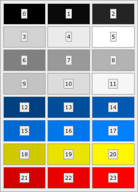

Defines skin classes for the "Terra" theme.
Terra skins get their colors from the theme's color palette, which contains 24 indexed colors. Most Terra skins expose a setter method for each color style that accepts an integer value; such methods allow callers to style the component by referencing the theme's color palette. The default palette is shown below:

The default color palette
The font, color palette, and message icons are defined in a JSON file that should contain a
Map containing the following properties:
| Property | Type | Description |
|---|---|---|
font |
String |
The default theme font; must be understandable by
java.awt.Font.decode().
|
colorMultiplier |
Number |
The default multiplication delta (+/-) for generating the darker and lighter version of any "base color palette", in the range [0.0..1.0]. |
themeIsDark |
boolean |
Tell if the theme is dark. Usually this means that (if true) any color will be transformed in the opposite way (brightening instead of darkening, and darkening instead of brightening). Set true if dark, false otherwise (default). |
themeIsFlat |
boolean |
Tell if the theme is flat. Usually this means that (if true) any border/shadow will not be drawn. Set true if flat, false otherwise (default). |
transitionEnabled |
boolean |
Tell if the theme has transitions enabled. Usually this means that (if false) any effect/transition will not be drawn. Set true if enabled (default), false otherwise. |
colors |
List<String> |
This list should contain eight colors in a form understandable by
java.awt.Color.decode(). This list represents the theme's
"base color palette", from which the full color palette is
derived. Each of these eight colors will be expanded to three
colors in the final palette: a darker version, the color itself,
and a lighter version. Thus, the final color palette will contain
24 colors. For instance, in the default color palette, the "base palette"
colors are the colors in the middle column.
|
messageIcons |
Map |
Message icon names; must include values for "error", "warning", "question", and "info".
Names are specified as resource named relative to the TerraTheme class.
|
smallMessageIcons |
Map |
Small message icon names; must include values for "error", "warning", "question", and "info".
Names are specified as resource named relative to the TerraTheme class.
|
defaultBackgroundColor |
String |
The theme's default background color in hexadecimal format, for example #ffffff.
If not set, a generic default will be used.
|
defaultForegroundColor |
String |
The theme's default foreground color in hexadecimal format, for example #000000.
If not set, a generic default will be used.
|
By default, the theme definition in TerraTheme_default.json is used,
but can be overridden via the org.apache.pivot.wtk.skin.terra.location
property.
For Example, in VM arguments set:
-Dorg.apache.pivot.wtk.skin.terra.location=TerraTheme_dark.json
or
-Dorg.apache.pivot.wtk.skin.terra.location=/org/apache/pivot/tests/TerraTheme_test.json